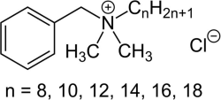

Disinfettanti
Versando alcol etilico su un uovo, l’albume diventa bianco proprio come accade quando lo cuocete in padella. A contatto con l’alcol o durante la cottura, l’albume cambia colore perché le proteine subiscono una trasformazione chimica: si denaturano.
Denaturare una proteina significa modificarne la struttura tridimensionale, rompendo le forze intermolecolari e intramolecolari che ne costituiscono l’impalcatura. Anche se i legami covalenti della molecola non vengono modificati, la proteina perde la sua funzione originaria. La denaturazione delle proteine è una delle strategie attraverso cui i disinfettanti agiscono contro virus, batteri e funghi.
Inattivare i virus
Il disinfettante può denaturare le proteine di cui è costituito il capside del virus causandone la coagulazione, come nel caso della cottura. Agiscono in questo modo tutti gli alcoli e i fenoli. Queste molecole hanno un gruppo funzionale idrossilico, –OH, in grado di creare efficacemente legami a idrogeno con gli amminoacidi che costituiscono le proteine. Questi nuovi legami scalzano i legami ad idrogeno preesistenti tra gli amminoacidi, distruggendo la struttura tridimensionale delle proteine.
“Distruggere” il capside: il disinfettante può attaccare gli amminoacidi di cui le proteine sono composte non solo distruggendone la struttura tridimensionale, ma anche rompendo i legami covalenti che formano la molecola. Agiscono in questo modo composti molto ossidanti, come l’acqua ossigenata (H2O2), l’ipoclorito di sodio (la comune candeggina, NaClO), l’anione permanganato (MnO4–), lo iodio e il cloro. N.B. Anche tutte le sostanze corrosive (acido solforico, acido cloridrico, soda caustica, calce viva, ecc.) possono distruggere il capside, con lo spiacevole effetto collaterale di distruggere anche le superfici che trattiamo con esse. Questo approccio è fortemente sconsigliato! Tuttavia, non tutti i virus sono uguali. Il SARS-CoV-2, in particolare, è un virus “inviluppato”: ovvero il capside proteico è circondato da una membrana fosfolipidica, detta pericapside. Questo virus, quindi, si può inattivare anche distruggendo la membrana fosfolipidica.
Agire sulla membrana: le membrane fosfolipidiche sono costituite da molecole particolari, che hanno una parte idrofila e una parte idrofoba. In ambiente acquoso queste molecole si raggruppano tra loro esponendo le parti idrofile all’acqua e tenendo vicine tra loro (e lontane dall’acqua) le parti idrofobe. Qualunque altra molecola che abbia questa stessa caratteristica, detta “anfifilia”, può interferire con la struttura di queste membrane, sfaldandole dall’interno. Agiscono così i composti cationici di ammonio quaternario, rappresentabili con la generica formula R4N+ (un atomo di azoto cui sono legati quattro gruppi funzionali organici). La carica positiva in questi cationi è tutta sull’atomo di azoto, che quindi agisce da parte idrofila e le “code” organiche sono invece idrofobe. I “quats” (il nome generico che raggruppa tutti questi composti) agiscono quindi come tensioattivi: disgregano la membrana e rendono il virus incapace di riconoscere e attaccare le cellule ospiti, pur non denaturando la proteina).
Il cloruro di benzalconio (Benzalkonium chloride) è una miscela di sali di ammonio quaternari. Più esattamente è una miscela di cloruri di alchil-benzil-dimetilammonio, in cui il gruppo alchile varia dall'ottile(C8H17-) all'ottadecile (C18H37-).
I detergenti come disinfettanti
Se facciamo un piccolo sforzo di memoria, forse ci salterà all’occhio che sono anfifilici anche i detergenti, ovvero quelle sostanze deputate a rimuovere lo sporco e il grasso. Anche i detergenti, quindi, possono essere buoni disinfettanti contro il SARS-CoV-2 e in tutti i casi in cui il patogeno abbia una membrana fosfolipidica (virus inviluppati e batteri, per esempio).
Coi saponi, che sono sali di sodio di acidi organici a catena lunga, anfifilici e quindi tensioattivi, si rendono solubili sia le membrane del pericapside che il grasso che abbiamo sulle mani, nel quale il virus si potrebbe annidare, in modo che l’acqua possa portare via tutti questi brandelli di membrane e grasso lasciando le nostre mani sia deterse (ovvero pulite) che disinfettate.